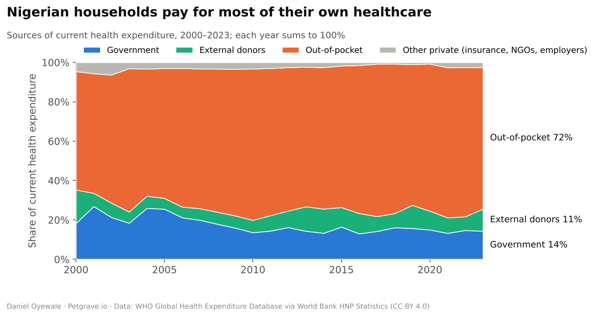
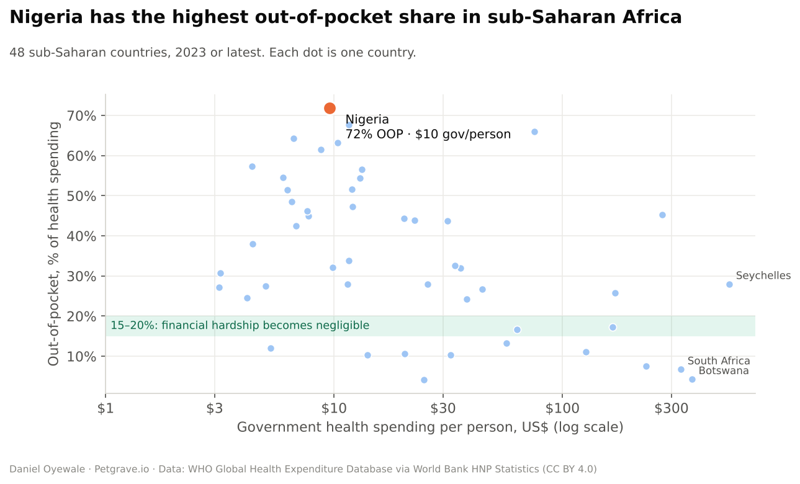
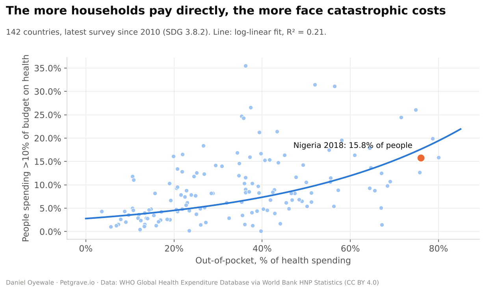
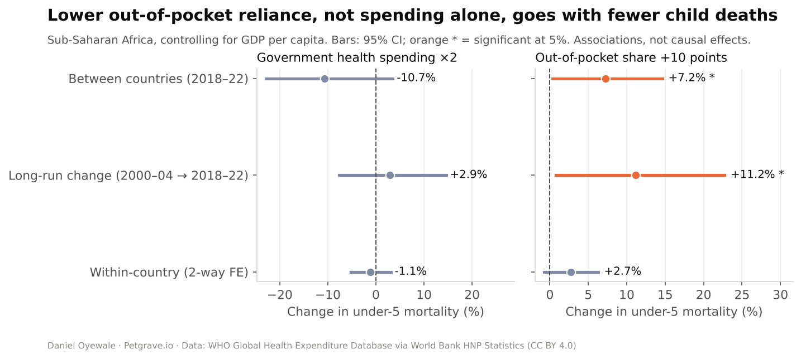
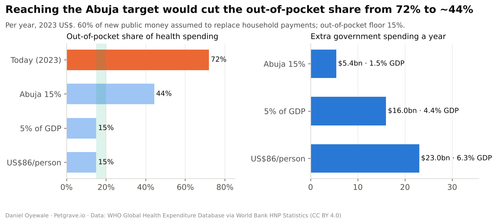

Key results
The headline numbers.
What the analysis shows
Findings, and what they mean for decision-makers.
- 1
Households carry the system
Out-of-pocket payments have stayed between 66% and 77% of health spending since 2005, while the government share slipped from 18% to 14%.
- 2
Paying at the point of care causes hardship
Across 142 countries, a 10-point fall in the out-of-pocket share goes with about 22% fewer people facing catastrophic health costs.
- 3
Money alone isn't enough
Across 46 African countries, the level of government health spending isn't significantly linked to child mortality. A 10-point fall in the out-of-pocket share goes with about 11% lower under-5 mortality over the long run.
- 4
The Abuja target is within reach
Reaching 15% of the budget costs about $5.4bn a year (3.4× the 2025 federal health budget). It could cut the out-of-pocket share from 72% to 44% and roughly halve catastrophic spending.
Charts
Click any chart to open it full size.





How it works
Full methodology, tests and code are on GitHub.
- Open global dataWHO Global Health Expenditure Database via World Bank HNP Statistics, WDI GDP PPP, 217 countries, 2000–2024
- Financing and protectionFinancing mix summing to 100%, benchmarks, SDG 3.8.2 catastrophic spending curve
- Panel econometricsTwo-way fixed effects with clustered errors, long-difference and cross-section checks, robustness runs
- Funding-gap simulatorAbuja, 5% of GDP, US$86 or custom targets; adjustable offset, floor and exchange rate; extrapolation flags
- Policy briefA two-page PDF generated from the same code, so its numbers always match the dashboard
Tech stack
PythonpandaslinearmodelsstatsmodelsPlotlyStreamlitmatplotlibReportLabpytestGitHub ActionsData & references
- WHO Global Health Expenditure Database
- World Bank HNP Statistics and WDI (CC BY 4.0)
- WHO World Health Report 2010
- Abuja Declaration (2001)
- McIntyre, Meheus & Røttingen (2017)
- Nigeria 2025 Appropriation Act · Nigeria Governors' Forum · NHIA
Limitations: Associations, not causes · modelled mortality estimates · last catastrophic-spending survey 2018 · the simulator holds everything else constant · θ and the out-of-pocket floor are assumptions.
More projects
Part of a data, strategy and sustainability portfolio.